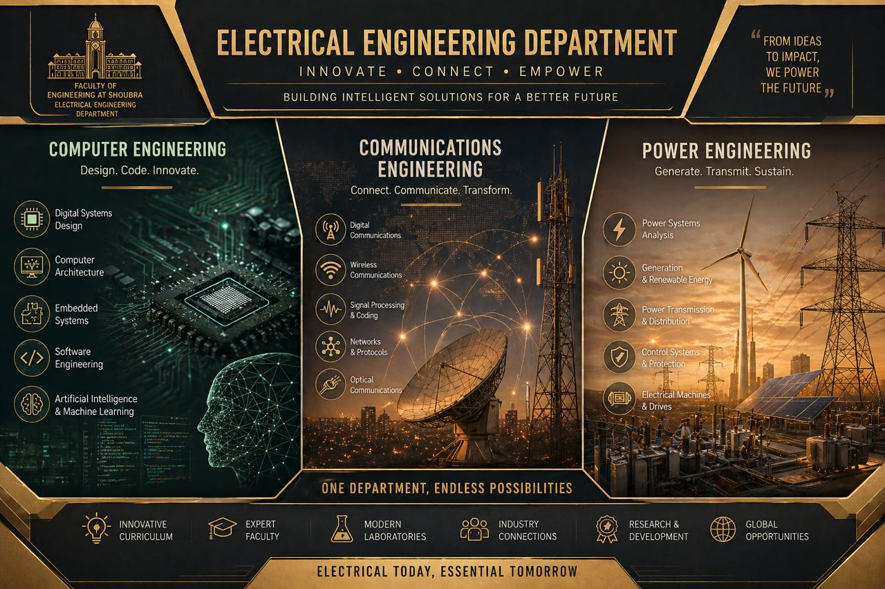
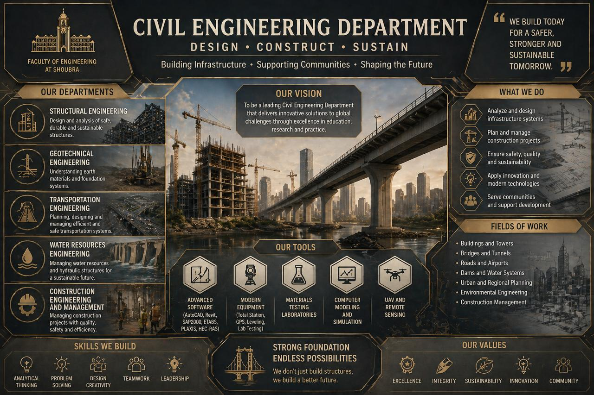
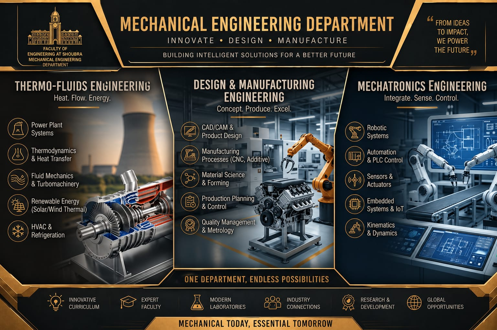
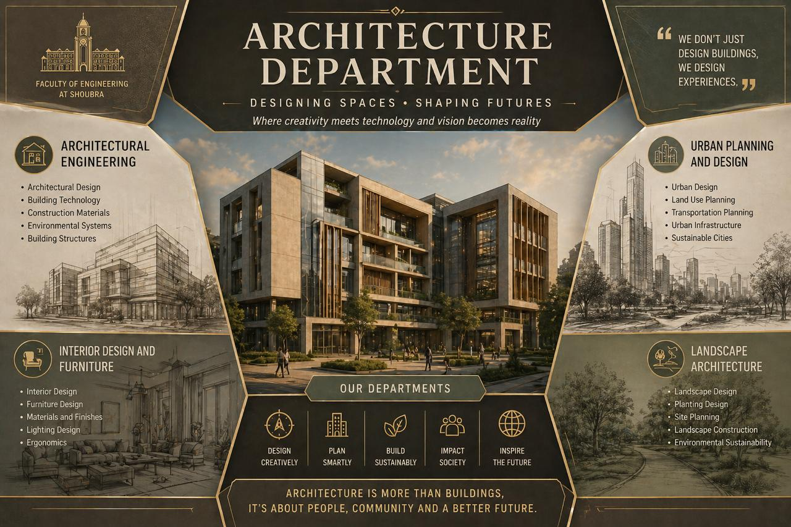

The backbone of the modern technological world, focused on harnessing and controlling electricity to develop intelligent systems in: power, communications, electronics, and computing, shaping a connected and digitally driven future. Electrical Power Engineering focuses on generating and distributing electricity. It deals with massive power plants, renewable energy, and smart grids. Communications Engineering specializes in transmitting data across the world. It covers satellite systems, fiber optics, and mobile networks like 5G. Computer Engineering combines electrical engineering with computer science. It focuses on designing hardware components and integrated software systems. Students learn about microprocessors, robotics, and artificial intelligence. These departments together drive the digital and industrial revolution. They offer diverse career paths in energy, tech, and telecommunications. Choosing one of them means shaping the future of global technology.

The foundation of civilization itself, dedicated to designing and constructing resilient infrastructure that supports communities, from towering structures to transportation and water systems, ensuring safety, sustainability, and long-term development.Civil Engineering is the professional discipline that deals with the design and construction of the physical and naturally built environment. It is considered the foundation of modern civilization as it shapes the infrastructure we use every day. This field includes the creation of essential structures such as bridges, dams, highways, and skyscrapers. Civil engineers also work on developing sustainable water supply systems and advanced sewage treatment plants. They play a vital role in protecting the environment by designing solutions for waste management and pollution control. The profession requires a deep understanding of mechanics, hydraulics, and materials science to ensure public safety.

A discipline that transforms energy into motion and ideas into machines, where engineering principles meet real-world applications to design, analyze, and manufacture systems that power industries, transportation, and modern life with efficiency and innovation. Mechanical Engineering is a diverse field that integrates the principles of physics and mathematics with material science to design and maintain complex systems. Mechanical Power Engineering focuses on energy conversion, thermodynamics, and the development of efficient engines and thermal systems. On the other hand, Production Engineering specializes in manufacturing processes, industrial management, and the optimization of production lines for maximum quality. Mechatronics Engineering represents the modern frontier, blending mechanical design with electronics, control systems, and computer programming.

A fusion of art and engineering that shapes the spaces we live in, blending creativity with technical precision to design buildings that are not only visually inspiring but also functional, sustainable, and responsive to human needs and environments. Architecture Engineering is the sublime intersection of creative artistry and rigorous engineering precision. It is the discipline responsible for designing the spaces where humanity lives, works, and thrives, balancing aesthetic beauty with structural integrity. Modern architecture delves deep into the study of environmental sustainability, utilizing smart materials to create eco-friendly and energy-efficient buildings. The core of this field lies in spatial planning, ensuring that every square meter serves a functional purpose while inspiring the human spirit. Ultimately, architecture is about creating a legacy in stone and glass that will inspire future generations.